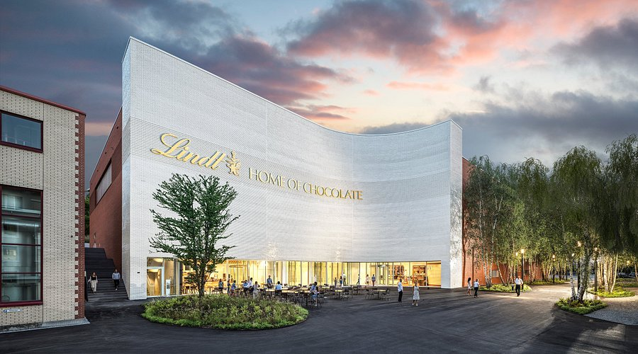
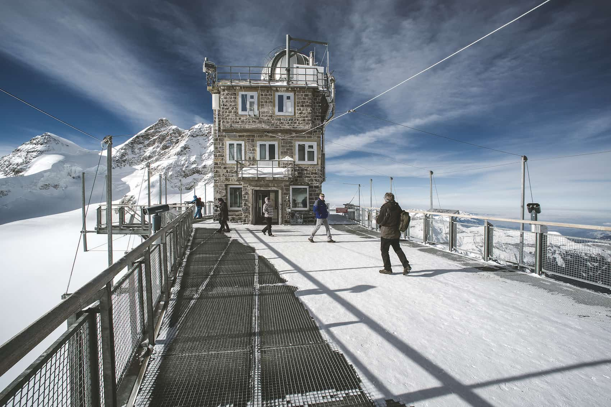
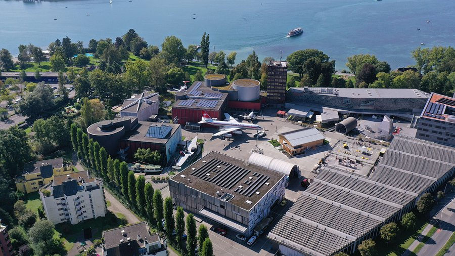
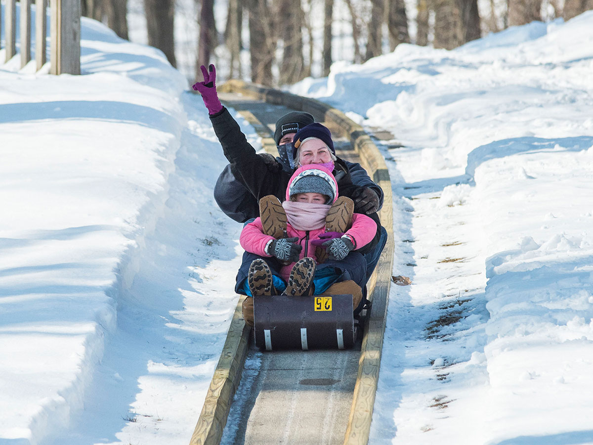
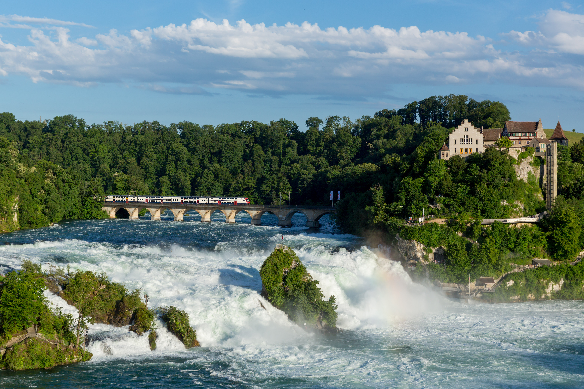

Switzerland is an exceptional destination for families. The country is safe, incredibly clean, and rich with child-friendly attractions. Public transport is comfortable and reliable, outdoor activities abound, and Swiss people are welcoming to families with children of all ages.
Top Family Attractions

Lindt Home of Chocolate, Zurich
An immersive chocolate museum with the world's largest chocolate fountain. Hands-on workshops and tastings make this a highlight for children of all ages.

Jungfraujoch – Top of Europe
Take the famous cogwheel railway up to 3,454m. Kids love the ice palace, snow activities, and the feeling of being above the clouds. Unforgettable for the whole family.

Swiss Museum of Transport, Lucerne
Switzerland's most visited museum with interactive exhibits on trains, planes, ships, space travel, and digital media. A full day's entertainment for children and adults.

Bear Park, Bern
Watch Bern's famous bears in a large natural enclosure right in the city. Free to visit, easily combined with exploring the medieval old town.

Toboggan Runs
Several resorts have long natural toboggan runs (Rodelbahn). The run from Grindelwald First (6 km!) and from Rigi Staffel are enormous fun for families.

Rhine Falls
Europe's largest waterfall near Schaffhausen is spectacular and easily reachable from Zurich. Boat rides to the rock in the middle of the falls are a huge hit with children.
Family-Friendly Resorts
- Saas-Fee – Car-free village, excellent ski school, glacier, indoor swimming pool
- Grindelwald – Easy train access, fun cable cars, toboggan run, junior hiking trails
- Davos-Klosters – Huge ski area, indoor wave pool, ice rink, children's programmes
- Interlaken – Central location, easy lake and mountain access, adventure park
- Arosa – Award-winning family resort, free ski school day for children, bear sanctuary
Family Transport Tips
🎫 Children Travel Free!
Children under 6 always travel free on Swiss public transport. Children 6–16 can purchase a Junior Travelcard for CHF 30, which allows them to travel free when accompanied by a parent holding a valid ticket. This is extraordinary value and makes Switzerland one of the world's best destinations for family rail travel.
Family Activity Ideas by Season
| Season | Activities |
|---|---|
| Summer | Lake swimming, hiking, zip-lining, chocolate factory, museum visits, picnics |
| Winter | Skiing, tobogganing, snowshoeing, ice skating, fondue evenings |
| Spring | See baby animals on farms, Easter celebrations, first wildflowers |
| Autumn | Watch cows return from Alps (Désalpe), apple picking, harvest festivals |